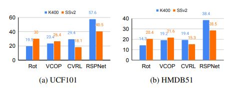

Clip Retrieval
For this downstream task, we generate the
feature vectors using pretraining weights. Nearest neighbour is found out by measuring the cosine distance between
the test feature vector and training feature vectors. Here,
we compare the Top@5 on UCF101 and HMDB51 for both
architectures, pre-trained on K400 and SSv2.
Observations: Amongst non-contrastive tasks, SSv2 learns better
features and outperforms K400 (Fig. 1) on both UCF101
and HMDB51, whereas, it’s reversed for contrastive tasks.
Overall the best performance is with pretraining on K400
with RSPNet on both the datasets.

Figure 1. Top@5 Clip Retrieval - R21D on a) UCF101 and b)
HMDB51, pre-trained on K400 and SSv2 - 30k subset.